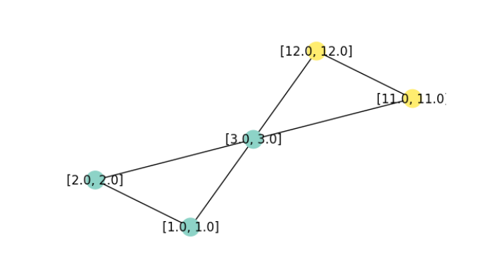

import torch
x = torch.tensor([[1, 1], [2, 2], [3, 3], [11, 11], [12, 12]], dtype=torch.float)If, in deep-learning world, the first half of the last decade has been the age of images, and the second, that of language, one could say that now, we’re living in the age of graphs. At least, that’s what commonly cited research metrics suggest. But as we’re all aware, deep-learning research is anything but an ivory tower. To see real-world implications, it suffices to reflect on how many things can be modeled as graphs. Some things quite naturally “are” graphs, in the sense of having nodes and edges: neurons, underground stations, social networks. Other things can fruitfully be modeled as graphs: molecules, for example; or language, concepts, three-dimensional shapes … If deep learning on graphs is desirable, what are the challenges, and what do we get for free?
What’s so special about deep learning on graphs?
Graphs are different from images, language, as well as tabular data in that node numbering does not matter. In other words, graphs are permutation-invariant. Already this means that architectures established in other domains cannot be transferred verbatim. (The ideas underlying them can be transferred though. Thus, in the graph neural network (henceforth: GNN) model zoo you’ll see lots of allusions to “convolutional”, “attention”, and other established terms.) Put very simply, and in concordance with common sense, whatever algorithm is used, it will fundamentally be based on how nodes are connected: the edges, that is.
When relationships are modeled as graphs, both nodes and edges can have features. This, too, adds complexity. But not everything is harder with graphs. Think of how cumbersome it can be to obtain labeled data for supervised learning. With graphs, often an astonishingly small amount of labeled data is needed. More surprisingly still, a graph can be constructed when not a single edge is present. Put differently, learning on sets can morph into learning on graphs.
At this point, let me switch gears and move on to the practical part: the raison d’être of this post.
Matching concepts and code: PyTorch Geometric
In this (and future) posts, we’ll make use of PyTorch Geometric (from hereon: PyG), the most popular, at this time, and fastest-growing in terms of functionality as well as user base, library dedicated to graph DL.
Deep learning on graphs, in its most general form, is usually characterized by the term message passing. Messages are passed between nodes that are linked by an edge: If node \(A\) has three neighbors, it will receive three messages. Those messages have to be summarized in some meaningful way. Finally – GNNs consisting of consecutive layers – the node will have to decide how to modify its previous-layer features (a.k.a. embeddings) based on that summary.
Together, these make up a three-step sequence: collect messages; aggegate; update. What about the “learning” in deep learning, though? There are two places where learning can happen: Firstly, in message collection: Incoming messages could be transformed by a MLP, for example. Secondly, as part of the update step. All in all, this yields mathematical formulae like this, given in the PyG documentation:
\[ \mathbf{x}_i^{(k)} = \gamma^{(k)} \left( \mathbf{x}_i^{(k-1)}, \square_{j \in \mathcal{N}(i)} \, \phi^{(k)}\left(\mathbf{x}_i^{(k-1)}, \mathbf{x}_j^{(k-1)},\mathbf{e}_{j,i}\right) \right) \]
Scary though this looks, once we read it from the right, we see that it nicely fits the conceptual description. The \((\mathbf{x}_i^{(k-1)}, \mathbf{x}_j^{(k-1)},\mathbf{e}_{j,i})\) are the three types of incoming messages a node can receive: its own state at the previous layer, the states of its neighbors (the nodes \(j \in \mathcal{N}(i)\)) at the previous layer, and features/embeddings associated to the edge in question. (I’m leaving out edge features in this discussion completely, so as to not further enhance complexity.) These messages are (optionally) transformed by the neural network \(\phi\), and whatever comes out is summarized by the aggregator function \(\square\). Finally, a node will update itself based on that summary as well as its own previous-layer state, possibly by means of applying neural network \(\gamma\).
Now that we have this conceptual/mathematical representation, how does it map to code we see, or would like to write? PyG has excellent, extensive documentation, including at the beginner level. But here, I’d like to spell things out in detail – pedantically, if you like, but in a way that tells us a lot about how GNNs work.
Let’s start by the information given in one of the key documentation pages, Creating message passing networks:
PyG provides the
MessagePassingbase class, which helps in creating such kinds of message passing graph neural networks by automatically taking care of message propagation. The user only has to define the functions \(\phi\), i.e.message(), and \(\gamma\), i.e.update(), as well as the aggregation scheme to use, i.e.aggr="add",aggr="mean"oraggr="max".
Scrolling down that page and looking at the two example implementations, however, we see that an implementation of update() does not have to be provided; and from inspecting the source code, it is clear that, technically, the same holds for message(). (And unless we want a form of aggregation different from the default add, we do not even need to specify that, either.)
Thus, the question becomes: What happens if we code the minimal PyG GNN? To find out, we first need to create a minimal graph, one minimal enough for us to track what is going on.
A minimal graph
Now, a basic Data object is created from three tensors. The first holds the node features: two features each for five nodes. (Both features are identical on purpose, for “cognitive ease” – on our, not the algorithm’s, part.)
The second specifies existing connections. For undirected graphs (like ours), each edge appears twice. The tensor you see here is specified in one-edge-per-line form for convenience reasons; to the Data() constructor we’ll pass its transpose instead.
edge_index = torch.tensor([
[0, 1],
[1, 0],
[0, 2],
[2, 0],
[1, 2],
[2, 1],
[2, 3],
[3, 2],
[2, 4],
[4, 2],
[3, 4],
[4, 3]
], dtype=torch.long)The third tensor holds the node labels. (The task will be one of node – not edge, not graph – classification.)
y = torch.tensor([[0], [0], [0], [1], [1]], dtype=torch.float)Constructing and inspecting the resulting graph, we have:
from torch_geometric.data import Data
data = Data(x = x, edge_index = edge_index.t().contiguous(), y = y)
data.x
data.edge_index
data.ytensor([[ 1., 1.],
[ 2., 2.],
[ 3., 3.],
[11., 11.],
[12., 12.]])
tensor([[0, 1, 0, 2, 1, 2, 2, 3, 2, 4, 3, 4],
[1, 0, 2, 0, 2, 1, 3, 2, 4, 2, 4, 3]])
tensor([[0.],
[0.],
[0.],
[1.],
[1.]])For our upcoming experiments, it’s more helpful, though, to visualize the graph:
import networkx as nx
import matplotlib.pyplot as plt
from torch_geometric.utils import to_networkx
def visualize_graph(G, color, labels):
plt.figure(figsize=(7,7))
plt.axis('off')
nx.draw_networkx(
G,
pos = nx.spring_layout(G, seed = 777),
labels = labels,
node_color = color,
cmap = "Set3"
)
plt.show()
G = to_networkx(data, to_undirected = True, node_attrs = ["x"])
labels = nx.get_node_attributes(G, "x")
visualize_graph(G, color = data.y, labels = labels)
Although our experiments won’t be about training performance (how could they be, with just five nodes), let me remark in passing that this graph is small, but not boring: The middle node is equally connected to both “sides”, yet feature-wise, it would pretty clearly appear to belong on just one of them. (Which is true, given the provided class labels). Such a constellation is interesting because, in the majority of networks, edges indicate similarity.
A minimal GNN
Now, we code and run the minimal GNN. We’re not interested in class labels (yet); we just want to see each node’s embeddings after a single pass.
from torch_geometric.nn import MessagePassing
class IAmLazy(MessagePassing):
def forward(self, x, edge_index):
out = self.propagate(edge_index, x = x)
return out
module = IAmLazy()
out = module(data.x, data.edge_index)
outtensor([[ 5., 5.],
[ 4., 4.],
[26., 26.],
[15., 15.],
[14., 14.]])Evidently, we just had to start the process – but what process, exactly? From what we know about the three stages of message passing, an essential question is what nodes do with the information that flows over the edges. Our first experiment, then, is to inspect the incoming messages.
Poking into message()
In message(), we have access to a structure named x_j. This tensor holds, for each node \(i\), the embeddings of all nodes \(j\) connected to it via incoming edges. We’ll print them, and then, just return them, unchanged.
class IAmMyOthers(MessagePassing):
def forward(self, x, edge_index):
out = self.propagate(edge_index, x = x)
return out
def message(self, x_j):
print("in message, x_j is")
print(x_j)
return x_j
module = IAmMyOthers()
out = module(data.x, data.edge_index)
print("result is:")
outin message, x_j is
tensor([[ 1., 1.],
[ 2., 2.],
[ 1., 1.],
[ 3., 3.],
[ 2., 2.],
[ 3., 3.],
[ 3., 3.],
[11., 11.],
[ 3., 3.],
[12., 12.],
[11., 11.],
[12., 12.]])
result is:
tensor([[ 5., 5.],
[ 4., 4.],
[26., 26.],
[15., 15.],
[14., 14.]])Let me spell this out. In data.edge_index, repeated here for convenience:
tensor([[0, 1, 0, 2, 1, 2, 2, 3, 2, 4, 3, 4],
[1, 0, 2, 0, 2, 1, 3, 2, 4, 2, 4, 3]])the first pair denotes the edge from node 0 (that had features (1, 1)) to node 1. This information is found in x_j’s first row. Then the second row holds the information flowing in the opposite direction, namely, the features associated with node 1. And so on.
Interestingly, since we’re passing through this module just once, we can see the messages that will be sent without even running it.
Namely, since data.edge_index[0] designates the source nodes for each edge:
data.edge_index[0]we can index into data.x to pick up what will be the incoming features for each connection.
data.x[data.edge_index[0]]tensor([[ 1., 1.],
[ 2., 2.],
[ 1., 1.],
[ 3., 3.],
[ 2., 2.],
[ 3., 3.],
[ 3., 3.],
[11., 11.],
[ 3., 3.],
[12., 12.],
[11., 11.],
[12., 12.]])Now, what does this tell us? Node 0, for example, received messages from nodes 1 and 2: (2, 2) and (3, 3), respectively. We know that the default aggregation mode is add; and so, would expect an outcome of (5, 5). Indeed, this is the new embedding for node 0.
In a nutshell, thus, the minimal GNN updates every node’s embedding so as to prototypically reflect the node’s neighborhood. Take care though: Nodes represent their neighborhoods, but themselves, they count for nothing. We will change that now.
Adding self loops
All we need to do is modify the adjacency matrix to include edges going from each node back to itself.
from torch_geometric.utils import add_self_loops
class IAmMyOthersAndMyselfAsWell(MessagePassing):
def forward(self, x, edge_index):
edge_index, _ = add_self_loops(edge_index, num_nodes = x.size(0))
print("in forward, augmented edge index now has shape")
print(edge_index.shape)
out = self.propagate(edge_index, x = x)
return out
def message(self, x_j):
return x_j
module = IAmMyOthersAndMyselfAsWell()
out = module(data.x, data.edge_index)
print("result is:")
outin forward, augmented edge index now has shape:
torch.Size([2, 17])
result is:
tensor([[ 6., 6.],
[ 6., 6.],
[29., 29.],
[26., 26.],
[26., 26.]])As expected, the neighborhood summary at each node now includes a contribution from each node itself.
Now we know how to access the messages, we’d like to aggregate them in a non-standard way.
Customizing aggregate()
Instead of message(), we now override aggregate(). If we wanted to use another of the “standard” aggregation modes (mean, mul, min, or max), we could just override __init__(), like so:
def __init__(self):
super().__init__(aggr = "mean")To implement custom summaries, however, we make use of torch_scatter (one of PyG’s installation prerequisites) for optimal performance. Let me show this by means of a simple example.
from torch_scatter import scatter
class IAmJustTheOppositeReally(MessagePassing):
def forward(self, x, edge_index):
out = self.propagate(edge_index, x = x)
return out
def aggregate(self, inputs, index):
print("in aggregate, inputs is")
# same as x_j (incoming node features)
print(inputs)
print("in aggregate, index is")
# this is data.edge_index[1]
print(index)
# see https://pytorch-scatter.readthedocs.io/en/1.3.0/index.html
# for other aggregation modes
# default dim is -1
return - scatter(inputs, index, dim = 0, reduce = "add")
module = IAmJustTheOppositeReally()
out = module(data.x, data.edge_index)
print("result is:")
outin aggregate, inputs is
tensor([[ 1., 1.],
[ 2., 2.],
[ 1., 1.],
[ 3., 3.],
[ 2., 2.],
[ 3., 3.],
[ 3., 3.],
[11., 11.],
[ 3., 3.],
[12., 12.],
[11., 11.],
[12., 12.]])
in aggregate, index is
tensor([1, 0, 2, 0, 2, 1, 3, 2, 4, 2, 4, 3])
result is:
tensor([[ -5., -5.],
[ -4., -4.],
[-26., -26.],
[-15., -15.],
[-14., -14.]])In aggregate(), we have two types of tensors to work with. One, inputs, holds what was returned from message(). In our case, this is identical to x_j, since we didn’t make any modifications to the default behavior. The second, index, holds the recipe for where in the aggregation those features should go. Here, the very first tuple, (1, 1), will contribute to the summary for node 1; the second, (2, 2), to that for node 0 – and so on. By the way, just like x_j (in a single-layer, single-pass setup) is “just” data.x[data.edge_index[0]], that index is “just” data.edge_index[1]. Meaning, this is the list of target nodes connected to the edges in question.
At this point, all kinds of manipulations could be done on either inputs or index; however, we content ourselves with just passing them through to torch_scatter.scatter(), and returning the negated sums. We’ve successfully built a network of contrarians.
By now, we’ve played with message() as well as aggregate(). What about update()?
Adding memory to update()
There’s one thing really strange in what we’re doing. It doesn’t jump to the eye, since we’re not simulating a real training phase; we’ve been calling the layer just once. If we hadn’t, we’d have noticed that at every call, the nodes happily forget who they were before, dutifully assuming the new identities assigned. In reality, we probably want them to evolve in a more consistent way.
For example:
class IDoEvolveOverTime(MessagePassing):
def forward(self, x, edge_index):
edge_index, _ = add_self_loops(edge_index, num_nodes=x.size(0))
out = self.propagate(edge_index, x = x)
return out
def update(self, inputs, x):
print("in update, inputs is")
print(inputs)
print("in update, x is")
print(x)
return (inputs + x)/2
module = IDoEvolveOverTime()
out = module(data.x, data.edge_index)
print("result is:")
outin update, inputs is
tensor([[ 6., 6.],
[ 6., 6.],
[29., 29.],
[26., 26.],
[26., 26.]])
in update, x is
tensor([[ 1., 1.],
[ 2., 2.],
[ 3., 3.],
[11., 11.],
[12., 12.]])
result is:
tensor([[ 3.5000, 3.5000],
[ 4.0000, 4.0000],
[16.0000, 16.0000],
[18.5000, 18.5000],
[19.0000, 19.0000]])In update(), we have access to both the final message aggregate (inputs) and the nodes’ prior states (x). Here, I’m just averaging those two.
At this point, we’ve successfully acquainted ourselves with the three stages of message passing: acting on individual messages, aggregating them, and self-updating based on past state and new information. But none of our models so far could be called a neural network, since there was no learning involved.
Adding parameters
If we look back at the generic message passing formulation:
\[
\mathbf{x}_i^{(k)} = \gamma^{(k)} \left( \mathbf{x}_i^{(k-1)}, \square_{j \in \mathcal{N}(i)} \, \phi^{(k)}\left(\mathbf{x}_i^{(k-1)}, \mathbf{x}_j^{(k-1)},\mathbf{e}_{j,i}\right) \right)
\] we see two places where neural network modules can act on the computation: before message aggregation, and as part of the node update process. First, we illustrate the former option. For example, we can apply a MLP in forward(), before the call to aggregate():
from torch.nn import Sequential as Seq, Linear, ReLU
class ILearnAndEvolve(MessagePassing):
def __init__(self, in_channels, out_channels):
super().__init__(aggr = "sum")
self.mlp = Seq(Linear(in_channels, out_channels),
ReLU(),
Linear(out_channels, out_channels))
def forward(self, x, edge_index):
edge_index, _ = add_self_loops(edge_index, num_nodes=x.size(0))
x = self.mlp(x)
out = self.propagate(edge_index = edge_index, x = x)
return out
def update(self, inputs, x):
return (inputs + x)/2
module = ILearnAndEvolve(2, 2)
out = module(data.x, data.edge_index)
print("result is:")
outresult is:
tensor([[-0.8724, -0.4407],
[-0.9056, -0.4623],
[-2.0229, -1.1240],
[-1.8691, -1.0867],
[-1.9024, -1.1082]], grad_fn=<DivBackward0>)Finally, we can apply network modules in both places, as exemplified next.
General message passing
We keep the MLP from the previous class, and add a second in update():
class ILearnAndEvolveDoubly(MessagePassing):
def __init__(self, in_channels, out_channels):
super().__init__(aggr = "sum")
self.mlp_msg = Seq(Linear(in_channels, out_channels),
ReLU(),
Linear(out_channels, out_channels))
self.mlp_upd = Seq(Linear(out_channels, out_channels),
ReLU(),
Linear(out_channels, out_channels))
def forward(self, x, edge_index):
edge_index, _ = add_self_loops(edge_index, num_nodes=x.size(0))
x = self.mlp_msg(x)
out = self.propagate(edge_index = edge_index, x = x)
return out
def update(self, inputs, x):
return self.mlp_upd((inputs + x)/2)
module = ILearnAndEvolveDoubly(2, 2)
out = module(data.x, data.edge_index)
print("result is:")
outresult is:
tensor([[ 0.0573, -0.6988],
[ 0.0358, -0.6894],
[-0.1730, -0.6450],
[-0.5855, -0.4171],
[-0.5890, -0.4141]], grad_fn=<AddmmBackward0>)At this point, I hope you’ll feel comfortable to play around, subclassing the MessagePassing base class. Also, if now you consult the above-mentioned documentation page (Creating message passing networks), you’ll be able to map the example implementations (dedicated to popular GNN layer types) to where they “hook into” the message passing process.
Experimentation with MessagePassing was the point of this post. However, you may be wondering: How do I actually use this for node classification? Didn’t the graph have a class defined for each node? (It did: data.y.)
So let me conclude with a (minimal) end-to-end example that uses one of the above modules.
A minimal workflow
To that purpose, we compose that module with a linear one that performs node classification:
class Network(torch.nn.Module):
def __init__(self, in_channels, out_channels, num_classes):
super().__init__()
self.conv = ILearnAndEvolveDoubly(in_channels, out_channels)
self.classifier = Linear(out_channels, num_classes)
def forward(self, x, edge_index):
x, edge_index = data.x, data.edge_index
x = self.conv(x, edge_index)
return self.classifier(x)
model = Network(2, 2, 1) We can then train the model like any other:
import torch.nn.functional as F
optimizer = torch.optim.Adam(model.parameters(), lr = 0.01)
model.train()
for epoch in range(5):
optimizer.zero_grad()
out = model(data.x, data.edge_index)
loss = F.binary_cross_entropy_with_logits(out, data.y)
loss.backward()
optimizer.step()
preds = torch.sigmoid(out)
predstensor([[0.6502],
[0.6532],
[0.7027],
[0.7145],
[0.7165]], grad_fn=<SigmoidBackward0>)And that’s it for this time. Stay tuned for examples of how graph models are applied in the sciences, as well as illustrations of bleeding-edge developments in Geometric Deep Learning, the principles-based, heuristics-transcending approach to neural networks.
Thanks for reading!
Photo by Alina Grubnyak on Unsplash